GLOVETREE · 식품용 일회용 장갑
라텍스 알러지의 원인인 천연고무 단백질이 없습니다
100% 무분말 · AQL 1.5 · 식품용 기구 표시
SELECT GUIDE
6종 × 3사이즈. 용도만 정하면 답이 나옵니다.
의료 검사용과
같은 품질 기준
세계 최대 니트릴 장갑
생산국, 말레이시아
평점 4.73
4점 이상 93%
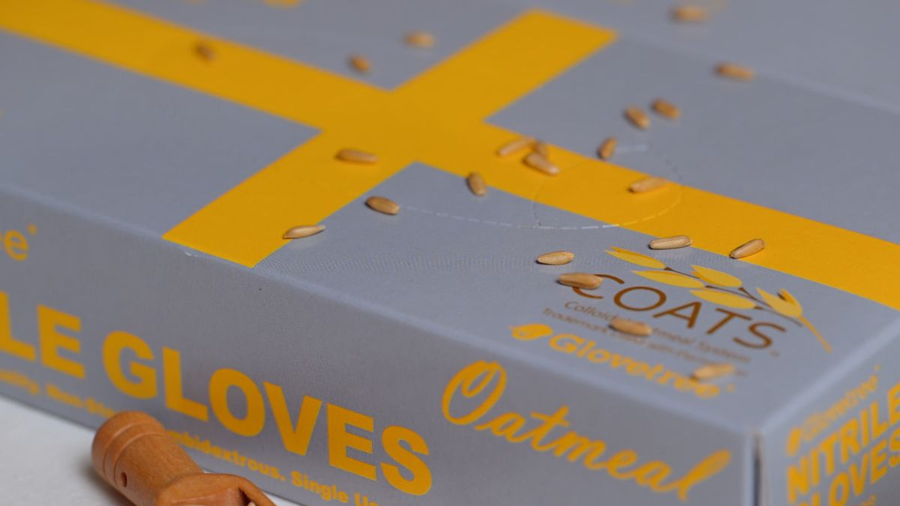
손가락 끝이 먼저 찢어집니다
벗고 나면 하얀 가루가 남습니다
고무 냄새가 음식에 뱁니다
S를 샀는데 손이 들어가지 않습니다
장갑은 다 비슷한 줄 알았습니다.
싼 걸로 두 겹 끼면 된다고 생각했습니다.
차이는 눈에 보이지 않는 곳에 있습니다.
AQL이라는 숫자입니다.
QUALITY STANDARD
숫자가 낮을수록 엄격한 기준입니다. 글러브트리는 식품용 장갑이면서 AQL 1.5로 관리됩니다.
PVC 무첨가 · 제조사 원료 리스트 기준
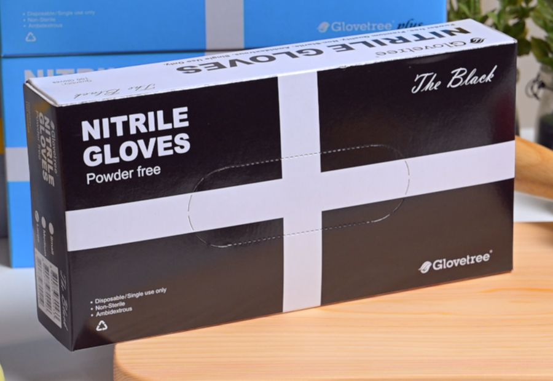
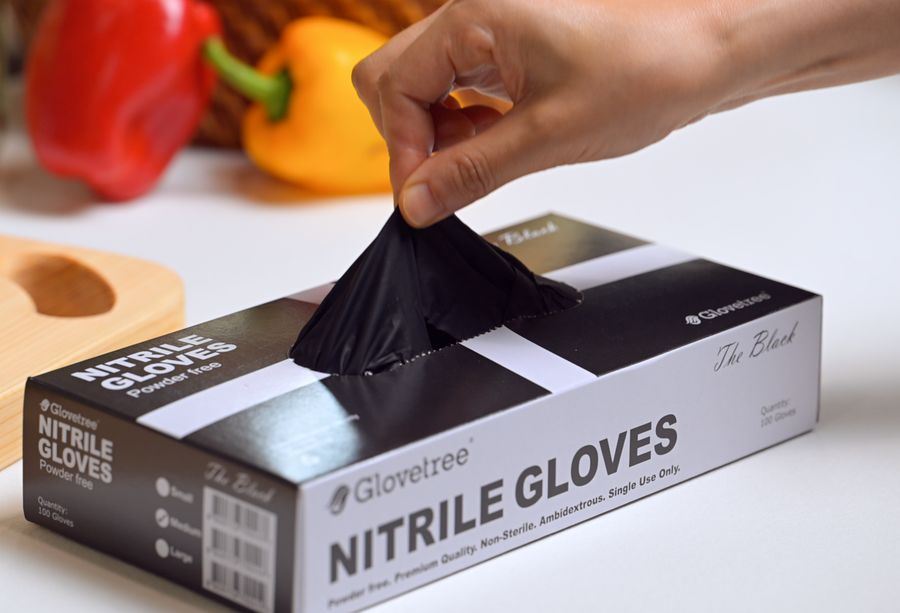
박스 상단 절취선에서 한 장씩 뽑힙니다. 여러 장이 딸려 나오지 않습니다.
100% 무분말 타입
스마트폰 터치 가능
손끝 미끄럼방지 처리
좌우 구분 없는 양손잡이용
착용이 편리한 끝단 말이 처리
식품용 기구 표시 제품
1회용 제품
5~40°C, 직사광선 · 습기 회피
COATS · COLLOIDAL OATMEAL SYSTEM
오트밀 제품은 COATS(Colloidal Oatmeal System) 내부 코팅을 적용했습니다. 손에 닿는 안쪽 면을 부드럽게 만들어, 장시간 착용에도 덜 답답합니다.
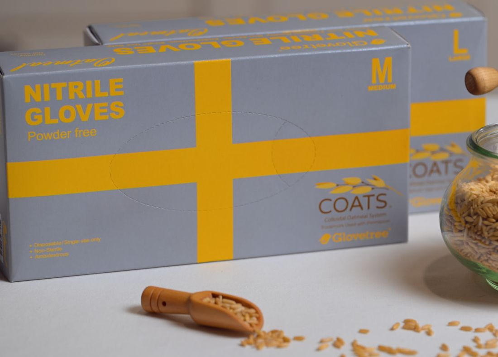
LINE UP
색상만 다르고 재질 · 규격은 동일합니다. (2번 고중량 제외)
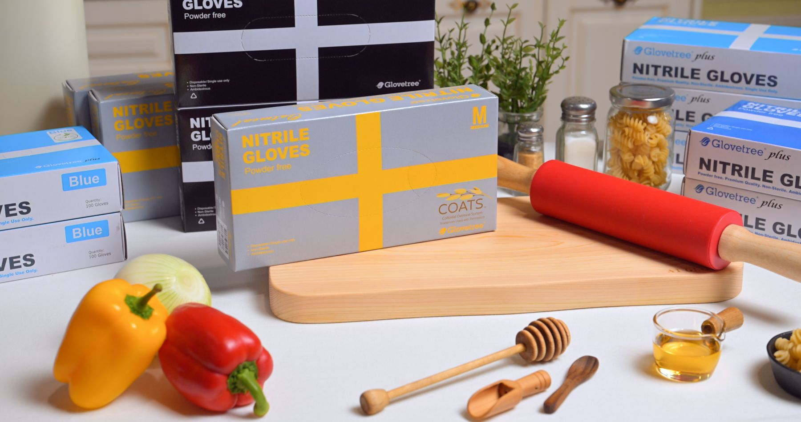
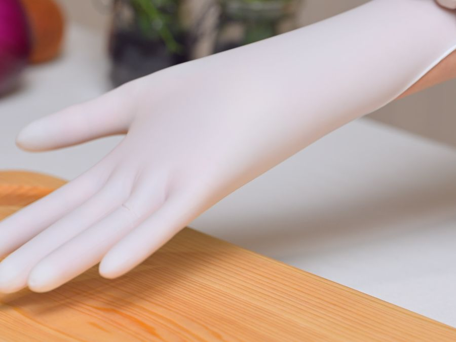
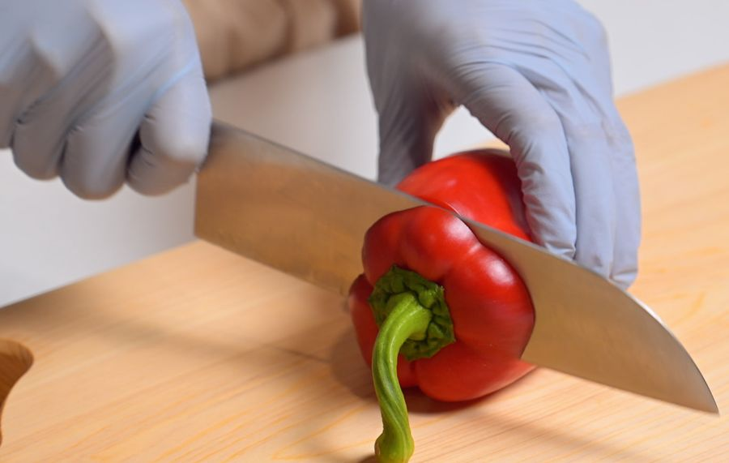
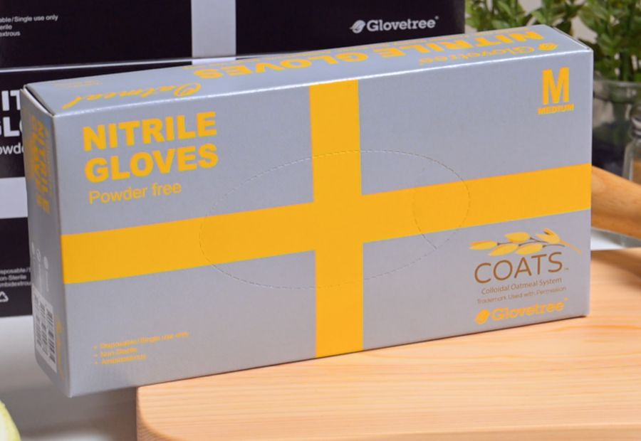
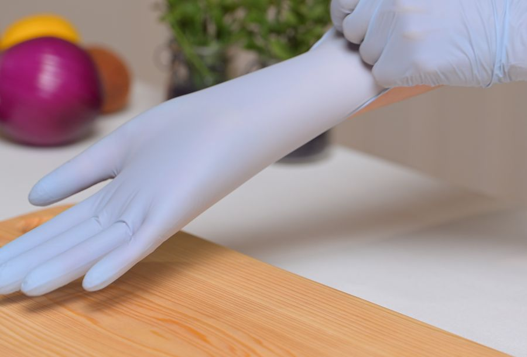
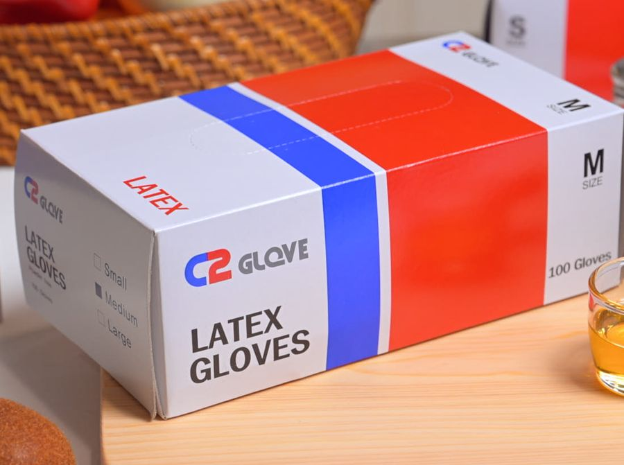
전 라인업 무분말(파우더프리) · 식품용 기구 표시 제품입니다.
MATERIAL
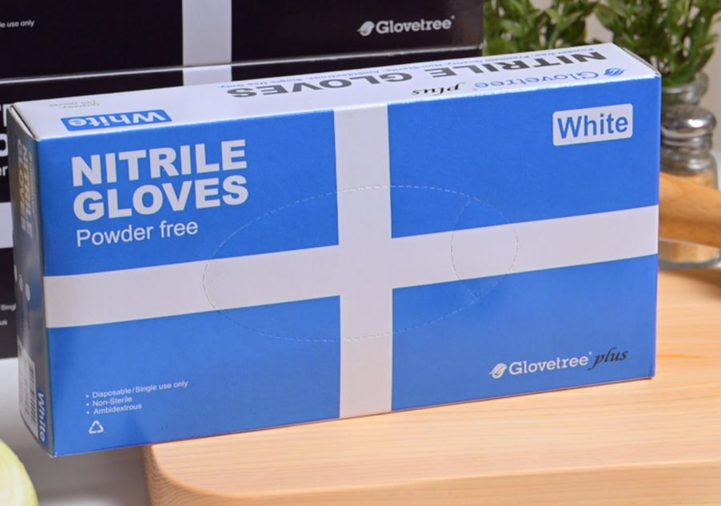
라텍스 알러지가 있으시면 니트릴을 선택하세요.
SIZE GUIDE
손바닥 너비를 기준으로 고르시면 됩니다.
※ 손바닥 너비뿐 아니라 개인의 손 두께에 따라 차이가 있을 수 있습니다.
“S는 딱 맞지만 끼고 뺄 때 불편해서 M이 편하다”는 후기가 많습니다. 착탈이 잦으시면 한 치수 크게 선택하세요.
IN THE KITCHEN
양념이 손에 배지 않습니다
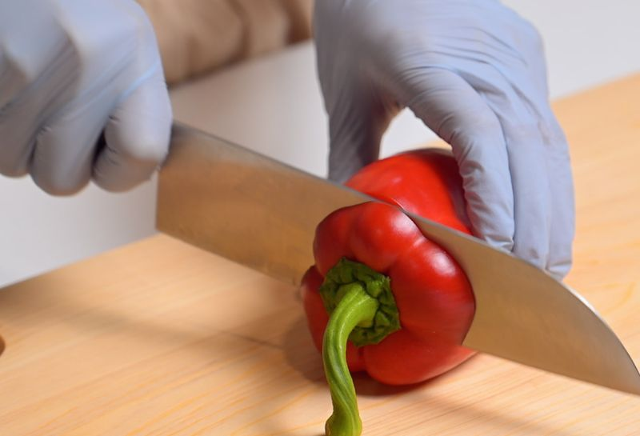
칼질할 때도 미끄러지지 않습니다
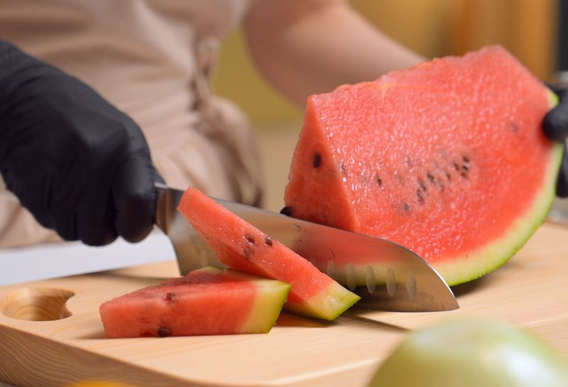
블랙은 오염이 눈에 띄지 않습니다
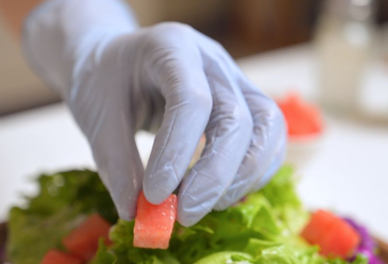
손끝 감각이 살아 있습니다
FAQ
니트릴 제품을 선택하세요. 천연 고무 단백질이 들어 있지 않습니다.
식품용 기구 표시 제품입니다. 박스에 식품용 도안이 인쇄되어 있습니다.
박스에 제조일과 사용기간이 표기되어 있습니다.
1회용 제품입니다. 재사용하지 마세요.
5~40°C, 직사광선과 습기를 피해 보관하세요.
미개봉 상태에서 교환 가능합니다.
색상만 다르고 재질 · 규격은 동일합니다. (2번 고중량 제외)
카톤 단위 문의 주시면 안내드립니다.
AQL 1.5 · 니트릴 92% · 파우더프리 · 16시 이전 주문 당일발송
판매사 ㈜한국에이원 · 제조사 Hartalega NGC Sdn. Bhd. · 원산지 말레이시아
식품용 기구 표시 제품 · 수입 시 지방식약청 검사 적합 판정